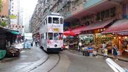

相關資訊
網上指南
| 資料收集 | 網站．網址 |
|---|---|
| 一起去旅遊吧！ 工作之餘，更對旅遊有著深切的渴望；旅遊最重要的就是搜集資訊，網路上旅遊指南和論壇討論區都是最好的資料來源。 充實的準備是必要的，能讓旅行者全面且初步的瞭解目的地，尤其是地圖的概念對於規劃行程動線相當重要。右側推薦幾個網站讓您可以依自己的需求收集旅行前的資料準備： |
香港昂坪360概覽_大嶼山旅遊起點 http://www.np360.com.hk/tc/about-np360/ |
| 香港旅遊發展局網站 http://www.discoverhongkong.com/tc/ |
|
| 香港海洋公園 http://oceanpark.com.hk/html/tc/park-experience/attraction-show/ |
|
| 香港國際機場 https://www.hongkongairport.com/chi/ |
|
| 香港港鐵 http://www.mtr.com.hk/ch/customer/tourist/index.php |
哪裡可以嚐到道地美食、哪裡可以體驗本土文化，透透過網路上最新的資訊，輕鬆認識香港的主要景點、酒店及旅館、表演場地，還有飲食熱點及購物圈，帶您發現更多不一樣的香港面貌。
好用 App
|
|
|
|||||||||
|
|
|
必遊景點
香港好玩的地方太多了，有山有水，都是可以讓您好好體驗香港萬千姿采的好去處。
出發囉！一起發現更多不一樣的香港面貌。
| 維多利亞港 | 維多利亞港位於香港島和九龍半島之間，由於港闊水深，因而被列為「世界三大天然良港」，更有「東方之珠」及「世界三大夜景」之美譽。沿岸除了有摩天大廈的景色外，還可以看到著名的星光大道、天星小輪、尖沙咀鐘樓...等景緻，而夜晚結合燈光與音樂的幻彩詠香江秀，更是不能錯過的世界級音樂匯演。 | |
|  | 春秧街 | 春秧街有「小福建」、「小上海」之稱，街道佈滿小販，兩旁樓宇地下則有專門售賣福建和上海等地道食物的店舖。不但是香港有趣的街道之一，叮叮車走在市場裡的特殊景像，四周充斥著熱鬧的叫賣聲、魚肉味或切肉聲...等畫面更深具特色，常吸引大批觀光客及攝影人士駐足留影。 |
| 太平山頂 | 太平山，是香港最受歡迎也是必遊的景點。除了可以搭乘山頂纜車登山，感受沿路陡峭的斜坡與一直後退的樹林及高樓大廈外，傍晚時刻到太平山頂，還可以透過凌霄閣頂層的摩天台一覽港島風景，瞬間體驗整個城市在白天與夜晚的景觀變化。 |